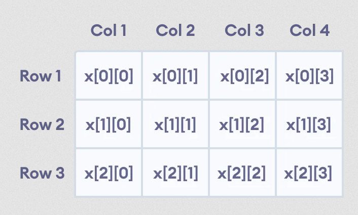
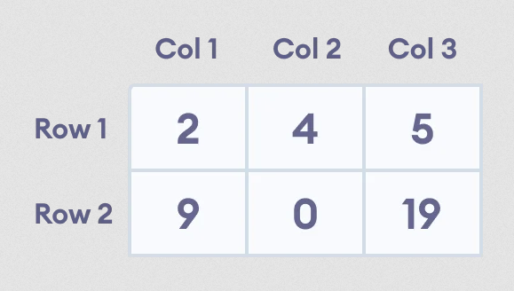

Extending from 1-D array, we can create an array of an array, known as a multidimensional array. For example:
int x[3 ][4 ];
Here, x is a two-dimensional array. It can hold a maximum of 12 elements.
We can think of this array as a table with 3 rows and each row has 4 columns as shown below.
Three-dimensional arrays also work in a similar way. For example:
float x[2 ][4 ][3 ];
This array x can hold a maximum of 24 elements.
Note: We can create an array of as many dimension as possible.
Multidimensional Array Initialization
Like a normal array, we can initialize a multidimensional array in a few ways.
1. Initialization of 2D array
int test[2 ][3 ] = {2 , 4 , 5 , 9 , 0 , 19 };
The above method is not preferred. A better way to initialize this array with the same array elements is given below:
int test[2 ][3 ] = { {2 , 4 , 5 }, {9 , 0 , 19 } };
This array has 2 rows and 3 columns, which is why we have two rows of elements with 3 elements each.
2. Initialization of 3D array
int test[2 ][3 ][4 ] = {
{ {3, 4, 2, 3}, {0, -3, 9, 11}, {23, 12, 23, 2} },
{ {13, 4, 56, 3}, {5, 9, 3, 5}, {5, 1, 4, 9} }
};
The first dimension has the value 2. So, the two elements comprising the first dimension are:
Element 1 = { {3, 4, 2, 3}, {0, -3, 9, 11}, {23, 12, 23, 2} }
Element 2 = { {13, 4, 56, 3}, {5, 9, 3, 5}, {5, 1, 4, 9} }
The second dimension has the value 3. Notice that each of the elements of the first dimension has three elements each:
{3, 4, 2, 3}, {0, -3, 9, 11} and {23, 12, 23, 2} for Element 1
{13, 4, 56, 3}, {5, 9, 3, 5} and {5, 1, 4, 9} for Element 2
Finally, there are 4 int numbers inside each of the elements of the second dimension:
{3, 4, 2, 3}
{0, -3, 9, 11}
... .. ...
... .. ...
Example 1: Printing 2D array
int test[3 ][2 ] = {{2 , -5 }, {4 , 0 }, {9 , 1 }};
// use of nested for loop access rows of the array
for (int i = 0 ; i < 3 ; ++i)
{
// access columns of the array
for (int j = 0 ; j < 2 ; ++j)
{
cout << "test[" << i << "][" << j << "] = " << test[i][j] << endl ;
}
}
test[0][0] = 2
test[0][1] = -5
test[1][0] = 4
test[1][1] = 0
test[2][0] = 9
test[2][1] = 1